Lotka-Volterra
El sistema Lotka-Volterra es un sistema dinámico de dos ecuaciones diferenciales que describe la interacción entre dos poblaciones distintas, usualmente presa-depredador.
$$ \left\{ \begin{array}{lc} \frac{dx}{dt} = \alpha x - \beta x y \text{;} & x(0) = x_{0}\text{,} \quad y(0) = y_{0} \\ \\ \frac{dy}{dt} = \delta x y - \gamma y \\ \end{array} \right. $$ Donde:
\( x(t) \) representa la población de presas e \( y\) la población de depredadores; y los parámetros:
- \( \alpha \) es la tasa de crecimiento de las presas.
- \( \beta \) es la tasa de pérdida de presas a causa de los depredadores.
- \( \delta \) es la tasa de crecimiento de los depredadores dependiendo de la disponibilidad de presas.
- \( \gamma \) es la tasa de mortalidad de los depredadores.
\( x_{0} \ \text{y} \ y_{0} \) son la cantidad de presas y depredadores al tiempo \( t = 0 \), respectivamente.
Regiones de comportamiento

El mapa se dividió en tres regiones: la primera representa la caída de población de depredadores debido a una escacez de presas; la segunda el crecimiento de la población de presas debido a la ausencia de depredadores; y finalmente, la tercera que muestra el "momento de caza" pues se observa una disminución de presas acompañado de aumento de depredadores. Nota: Se considera que la población en millares.
Para el caso de referencia se consideraron los parámetros:
- \( \alpha = 1.2 \)
- \( \beta = 0.3 \)
- \( \delta = 0.1 \)
- \( \gamma = 0.2 \)
En cada caso se cambio solo parámetro que se específica al inicio de cada tanda de resultados, tanto del espacio de las fases como de la evolción temporal, que se muestran a continuación:
Caso de Referencia


Caso \( \alpha = 0.9 \)


Caso \( \beta = 1 \)


Caso \( \delta = 0.05 \)


Caso \( \gamma = 0.4 \)


Discusión
Se observan tres regiones de comportamiento, las cuales se mencionaron al inicio. La región 1 corresponde a la zona donde el signo de la derivada, correspondiente a la velocidad de crecimiento de los depredadores \( \dot{y} \), es negativo pues se muestra como va descendiendo su población y a la mitad de la región aparece el cambio de signo de la velocidad de población de presas \( \dot{x} \), sin embargo, también al final se observa el cambio de \( \dot{y} \) a signo positivo mostrando un pequeño crecimiento. A escaces de depredadores se ve que \( \dot{x} \) va creciendo pero también \( \dot{y} \) va en aumento. Algo que cabe destacar es que, en el caso correspondiente a las condiciones iniciales \( (x_{0},y_{0}) = (2,1) \), la solución desaparece del espacio de fases, lo cual significa la extinción de la población de presas y se puede comprobar con el gráfico de evolución temporal correspondiente a esas condiciones iniciales. Finalmente, en la trancisión de región dos a tres, se puede observar el cambio de signo de \( \dot{x} \) por lo que comienza la reducción de presas y se alcanza la máxima tasa de crecimiento de depredadores. Al reducir el parámetro \( \alpha \), relacionada al crecimiento de presas, observamos que se reduce la población máxima alcanzada tanto de presas como de depredadores, pues al tener menos comida, su reproducción es menor. Al aumentar la tasa de pérdida de presas por depredadores \( \beta \), se puede notar que el equilibrio se alcanza con poblaciones menores para las conciones \( (x_{0},y_{0}) = (2,1) \) y \( (x_{0},y_{0}) = (6,2) \); sin embargo, para las condiciones iniciales correspondientes a una mayor población de depredadores \( (x_{0},y_{0}) = (3,7) \) se observa una extinción muy rápida, además el tiempo propuesto no alcanzó para terminar un ciclo de la solución (matemáticamente hablando). Los otros dos casos, correspondiente a la velocidad de crecimiento de depredares, mostraron comportamientos similares. En un caso se redujo a la mitad la tasa de crecimiento de depredadores \( \delta \) y en el otro se aumento al doble la tasa de muerte de depredadores \( \gamma \). A pesar de su comportamiento similar, las gráficas de evolución temporal nos muestran comportamientos diferentes, pues en el cambio de \( \delta \) observamos extinción en una de las soluciones, mientras que en el otro, las tres muestran equilibrio en el espacio de las fases. Finalmente, se obtuvo un comportamiento similar en todas las gráficas de evolución temporal donde los máximos de población se encuentran desfasados, esto puede explicarse gracias a que a menor cantidad de depredadores, las presas pueden ir creciendo con mayor libertad, sin embargo, eso significa más alimento para los depredadores por lo que provoca un mayor crecimiento en su población mientras van reduciendo la cantidad de presas.
Péndulo simple
El péndulo simple es un módelo ideal donde se desprecian las fuerzas externas y se describe a través de la EDO de segundo orden:
$$ \frac{d^{2} \theta}{dt^{2}} + \frac{g}{\ell}sin(\theta) = 0$$Esta EDO se puede convertir en un sistema de dos ecuaciones de primer orden al definir \( \omega = \frac{d \theta}{dt}\) llegando a:
$$ \left\{ \begin{array}{lc} \frac{d \theta}{dt} = \omega \text{;} & \theta (0) = \theta_{0} \text{,} \quad \omega (0) = \omega_{0} \\ \\ \frac{d \omega}{dt} = -\frac{g}{l} sin(\theta) \\ \end{array} \right. $$ donde:
\( \theta \) representa la posición angular respecto al eje vértical; \( \omega \) es la velocidad angular; \( \ell \) la
longitud de la cuerda de masa despreciable; y \( g \) es la aceleración de la gravedad.
\( \theta_{0} \ \text{y} \ \omega_{0} \) represantan la condiciones inciales del ángulo y velocidad angular, respectivamente.
Se consideraron tres soluciones distintas, donde las condiciones inciales se muestran en los gráficos. Además se tomaron en cuenta dos casos donde se cambió la longitud de la cuerda. Los resulados, del espacio de las fases como de las evoluciones temporales, se muestran a continuación:
Caso \( \ell = 1 \)


Caso \( \ell = 2 \)


Discusión
Atractor de Lorenz
El atractor de Lorenz es el sistema predilecto para comenzar a estudiar el caos y la sensibilidad a condiciones iniciales. Se describe a tráves de:
$$ \left\{ \begin{array}{lc} \frac{dx}{dt} = \sigma (x-y) \text{;} & x(0) = x_{0} \text{,} \quad y(0) = y_{0} \text{,} \quad z(0) = z_{0} \\ \\ \frac{dy}{dt} = x (\rho - z) \\ \\ \frac{dz}{dt} = xy -\beta_{l} z \\ \end{array} \right. $$ donde \( x \text{,} \ y \text{, y} \ z \) son variables y \( \sigma \text{,} \ \rho \text{, y} \ \beta_{l} \) parámetros.Se consideraron los valores estándar del atractor de lorenz donde:
- \( \sigma = 10 \)
- \( \beta_{l} = \frac{8}{3} \)
- \( \rho = 28 \) ; valores para los cuales el modelo comienza a producir un comportamiento caótico.
A continuación se muestran los resultados obtenidos de las simulaciones para tres condiciones inciales distintas:
Soluciones temporales.
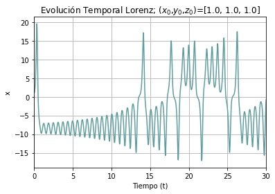
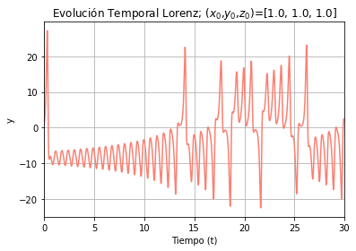
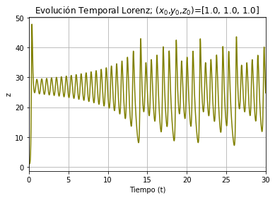
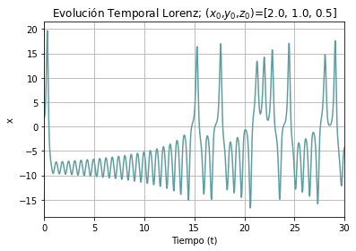
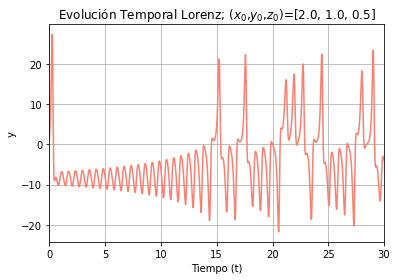
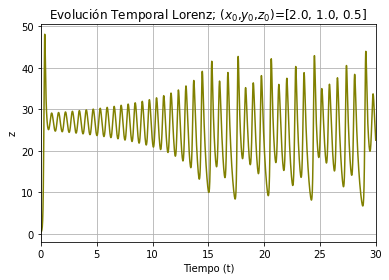
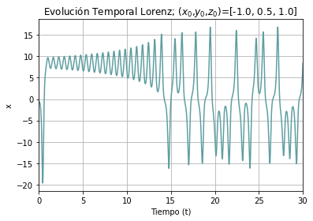
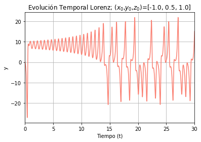
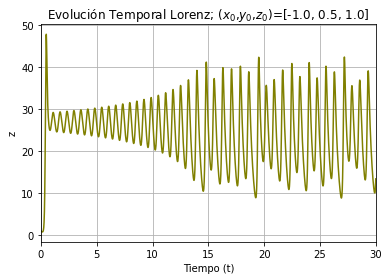
Espacios de las fases por pares y 3D.


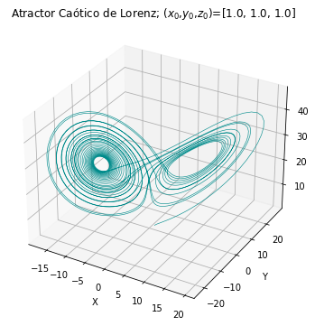
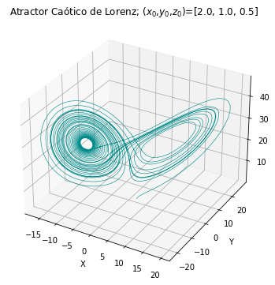
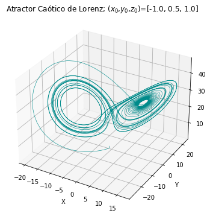
Sensibilidad a las condiciones iniciales.


Discusión
Para los tres casos de condiciones iniciales obtuvimos comportamientos caóticos los cuales terminan oscilando alrededor de dos puntos; tanto los mapas del espacio de fases como las evoluciones temporales para cada variable nos ayudan a observar este fenómeno. Cabe destacar de que apesar de que las condiciones iniciales son distintas, los resultados parecen ser similares; sin embargo, se tomó el caso de condiciones \( (x_{0},y_{0}, z_{0}) = (1,1,1) \) y se realizó una perturbación en la variable \( x \) con el fin de observar la sensibilidad a las condiciones iniciales. En el gráfico de evolución temporal podemos observar que inicialmente tienen un comportamiento similirar pero al comenzar a oscilar entre los dos puntos atractores el comportamiento cambia totalmente pero preservando el moviento alrededor de los atractores. El mapa del Espacio de la fases nos muestra un claro comportamiento distinto que hasta llega a parecer que el caso pertubado no tiene ninguna coherencia, sin embargo, con la evolución temporal hemos visto que aún sigue oscilando alrederor de los atractores.
Conclusión
Recursos
En la siguiento liga se encuentran los códigos utilizados: Códigos